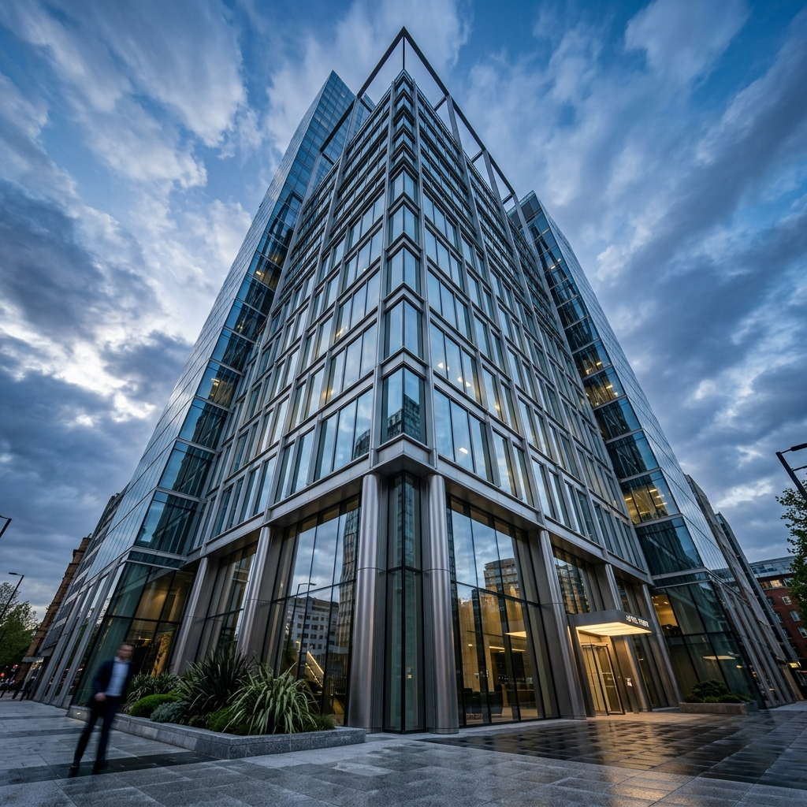
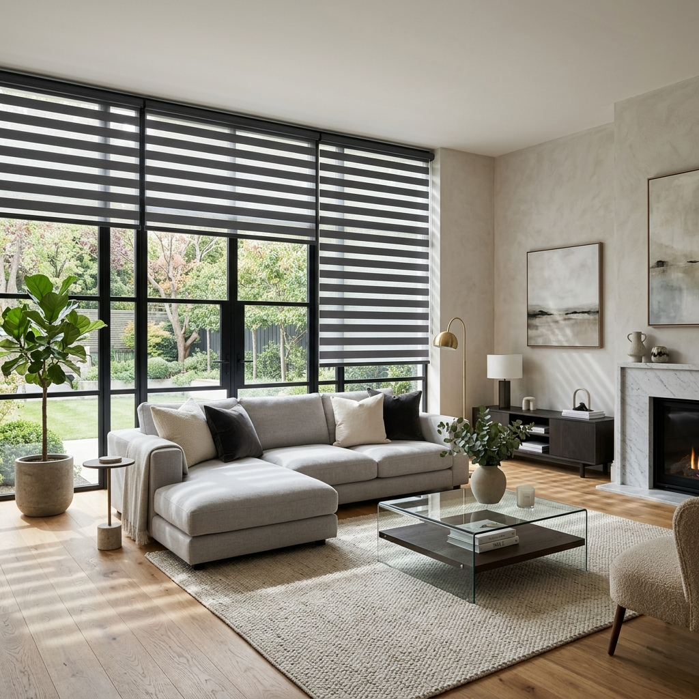
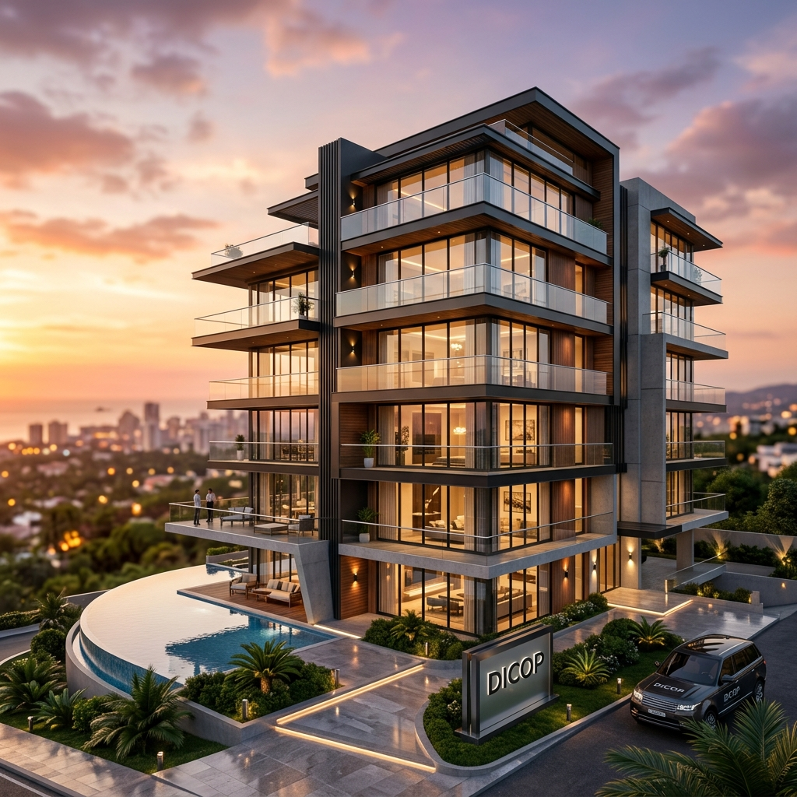

Construimos tus sueños, desde el primer trazo hasta la entrega final. En DICOP, transformamos conceptos en realidades sólidas. Especialistas en diseño, remodelaciones y proyectos civiles con acabados de alta calidad.
Nuestros Proyectos
Explora nuestra galería.
Rangos orientativos
Compara rápido antes de cotizar.
Los precios finales dependen de medida, tela, sistema, cantidad e instalación. Estos rangos ayudan a decidir mejor desde el inicio.
ProductoUso idealPrivacidadRango estimado
Roller simpleOficinas, salas, ventanas modernasMediaDesde Bs 180/m²Cotizar
Roller duoLuz regulable y estética premiumMedia/AltaDesde Bs 260/m²Cotizar
Persiana VenecianaDormitorios, salas de reunión, decoraciónMediaDesde Bs 220/m²Cotizar
Panel japonésVentanales amplios y división eleganteMediaSegún medidaCotizar
Productos DICOP
Soluciones claras para privacidad, luz y acabado visual.
01
ROLLER SIMPLE
Una cortina roller simple es un tipo de cortina que se despliega y enrolla verticalmente. Está compuesta por una sola pieza de tela que se enrolla alrededor de un tubo superior. Se utiliza comúnmente para cubrir ventanas y proporcionar privacidad, así como para regular la entrada de luz. Estas cortinas son conocidas por su diseño minimalista y funcionalidad, ya que pueden ser fácilmente manejadas para ajustar la cantidad de luz que entra en un ambiente.
02
ROLLER DUO
Una cortina roller duo es un tipo de cortina que combina dos telas, generalmente una red o malla y otra traslúcida u oscura (Blackout) en un solo sistema. Permite ajustar la entrada de luz y dar privacidad al superponer o alinear las dos capas de tela. Este diseño versátil proporciona opciones para controlar la iluminación y crear ambientes personalizados en espacios interiores.
03
PERSIANAS VENECIANAS
Compone de láminas horizontales de aluminio que se pueden subir o bajar. Estas láminas están suspendidas por cuerdas y pueden inclinarse para ajustar la cantidad de luz y privacidad. Ideal para ambientes donde se requiere bastante limpieza.
04
LUMINETA
Innovadoras cortinas compuestas por láminas de tela fina vertical insertada entre dos velos translúcidos, y que al girar permiten el control de luz natural y de privacidad. Ofrecen apertura central o lateral, logrando cubrir grandes dimensiones.
05
PERSIANA VERTICAL
Persiana que se caracteriza por tener láminas que se extienden de manera vertical. Se componen de una serie de flejes que se agrupan en un riel superior y ofrecen apertura central o lateral para regular la cantidad de luz. Estas cortinas giran 180 grados por lo que podemos direccionar la cantidad de luz en el ambiente.
06
PANEL JAPONÉS
Cortinas modernas diseñadas para cubrir ventanales grandes, puertas corredizas ó para dividir espacios internos. Consta de dos o más cortinas lisas, cada una de ellas circulando por una riel independiente, y que al abrirse el panel o cortina se superponen unas encima de las otras.
07
CORTINA TRADICIONAL “TUBO CON ARGOLLAS”
Cortina tradicional que se cuelga mediante anillos o argollas que se deslizan a lo largo de una barra de tubo. Por su forma, ideal para ambientes amplios estilo colonial.
CochabambaServicio local con atención por WhatsApp y coordinación de visita técnica.A medidaFabricación según medida, sistema, tela, privacidad y tipo de ambiente.CalidadMateriales seleccionados e instalación profesional para un acabado limpio.
Portfolio de Excelencia
Proyectos que definen nuestro estándar.
Explora nuestras obras más recientes en arquitectura, construcción e interiorismo.

Fachada CorporativaDiseño estructural y acabado en vidrio templado.

Interiorismo & ConfortInstalación de Roller Duo en departamentos de lujo.

Residencia San BenitoVisualización 3D y ejecución de obra civil.
Cortinas
Un proceso rápido para cotizar tus cortinas sin complicarte.
01
VISITA A DOMICILIO Y SELECCIÓN DE CORTINA
En DICOP nos preocupamos por que tu proceso de compra comience con una visita a domicilio, donde te aconsejamos el modelo adecuado de cortinas según tus necesidades.
02
TOMA DE MEDIDAS
Antes de poder hacer una cotización precisa, es necesario conocer las medidas exactas de los espacios en donde vayamos a instalar las cortinas que se han elegido previamente.
03
COTIZACIÓN Y ANTICIPO
Ya con las medidas exactas y el modelo de cortinas elegido, en DICOP podremos hacer la cotización del total y solicitaremos un anticipo para determinar el tiempo de entrega.
04
INSTALACIÓN Y SALDO CONTRA ENTREGA
Llegada la fecha establecida, el personal de DICOP procederá con la instalación completa de las cortinas en el hogar de destino y se finalizará con el pago del restante. La instalación ya viene incluida con el servicio.
Cotización directa
Envía tu medida o una foto y recibe una recomendación rápida.
Si no sabes qué elegir, dinos el ambiente, el nivel de privacidad y si quieres luz suave, regulable o
bloqueo total. Te orientamos antes de fabricar.
WhatsApp como canal principalAtención en CochabambaVisita técnica según proyecto
.jpeg)
.jpeg)
.jpeg)
.jpeg)
.jpeg)
.jpeg)